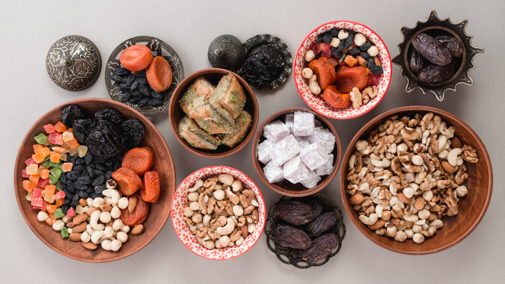

<!DOCTYPE html>
<html lang="en">
<head>
  <title>Eat Healthy</title>
  <meta charset="utf-8">
  <meta name="viewport" content="width=device-width, initial-scale=1">
  <link rel="stylesheet" href="https://maxcdn.bootstrapcdn.com/bootstrap/3.4.1/css/bootstrap.min.css">
  <script src="https://ajax.googleapis.com/ajax/libs/jquery/3.5.1/jquery.min.js"></script>
  <script src="https://maxcdn.bootstrapcdn.com/bootstrap/3.4.1/js/bootstrap.min.js"></script>
  </html>
 
<body>

<nav class="navbar navbar-inverse">
  <div class="container-fluid">
    <div class="navbar-header">
      <a class="navbar-brand" href="#">EatHealthy</a>
    </div>
    <ul class="nav navbar-nav">
      <li class="active"><a href="#">Home</a></li>
      <li class="dropdown"><a class="dropdown-toggle" data-toggle="dropdown" href="#">Dry Fruits <span class="caret"></span></a>
        <ul class="dropdown-menu">
          <li><a href="almonds.html">Almonds</a></li>
          <li><a href="pistachios.html">Pistachios</a></li>
          <li><a href="walnuts.html">Walnuts</a></li>
        </ul>
      </li>
      <li><a href="about.html">About us</a></li>
      <li><a href="checkout.html">Checkout</a></li>
      <li><a href="login.html">login</a></li>
     
    </ul>
  </div>
</nav>

<div class="container">
  <h2>Benefits of Dry Fruits</h3>
  <p>Most dry fruits are rich in minerals, proteins, fibre and vitamins add to that they are tasty and delicious too. Dry fruits are excellent and healthy substitute for daily snacks. Consumption of dry fruits enhances energy and stamina; also as they are rich in fibre which means better digestion and overall health. Nuts are great source of protein and iron especially if you are a vegetarian. Dry Fruits are also rich source of Calcium, Copper, Iron, Magnesium, Potassium, Phosphorus, Protein, Riboflavin, Vitamin A-C-E-K-B6 and Zinc. This means healthy bones, muscles, nerves, teeth and skin. This also means protection from anaemia, heart diseases, high cholesterol, strengthening of immune system and much more.</p>
<h2>How to include Dry Fruits in one’s Daily Diet?</h3>
<p>
    Not all dry fruits are superfoods, neither is uncontrolled consumption of them good for health. Only a handful of dry fruits per day are more than enough to meet one’s daily need. Dry fruits are either sun-dried or are dried artificially, in both cases water is removed from the produce which may mean losing of nutrients and minerals in some cases. In many a cases chemical ingredients may be added such as artificial colors and more. To avoid these shortcoming ensure that one only purchases natural and organic produce of dry fruits. Another factor to keep in mind is calorie intake; many dry fruits can be high on calories. Also as volume of dry fruits is less many a time a person can consume a whole lot of the same without thinking much about it. The best way to include dry fruits in one’s daily diet is to use them as snacks or to include them in daily cooking and in various dishes.</p>

    <h2>Best Dry Fruits for Consumption</h2>
    <p>
        There are many dry fruits that a person can and should include in his daily diet. Some of these are good others are still better. So which are the best and most beneficial dry fruits and why? First in the list is of course almonds; they have zero cholesterol and are rich in antioxidants and fibre. Besides that they are great for skin, hair and overall health. They are also believed to provide protection from heart and many other diseases. Second on our list are Cashews, they are rich in Vitamin E and B6. They also contain ample protein, potassium, mono-unsaturated fat and fibre. Walnuts are third on our list because they are loaded with Omega-3 fatty acids, proteins, fibres, anti-oxidants, vitamins and minerals. Raisins, pistachios and dates will come next on the list. These dry fruits are rich in vitamins and proteins; they also boost immunity and prevent lifestyle diseases such as cholesterol and diabetes.</p>
</div>


</body>
</html>